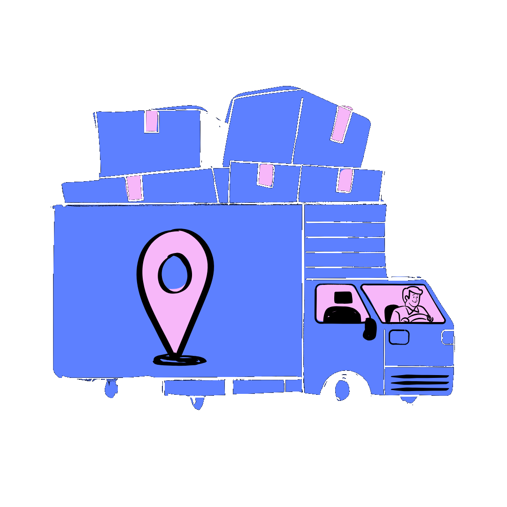

Moving on from App engine for good!

It's a common and recommended practice to migrate your App Engine services to Cloud Run, as Google's own documentation states:
“Cloud Run is the latest evolution of Google Cloud Serverless, building on the experience of running App Engine for more than a decade.”Today we will focus on the WHYs and how-tos for migrating to Cloud Run as your modern serverless platform. Let's get started!
Quick links
WHY to Migrate From App Engine to Cloud Run
Cloud Run serves applications more effectively than traditional App Engine by offering greater
flexibility, portability, and control. Here are the core reasons to make the switch:
- Scale to Zero: App Engine Flexible can’t scale to zero; Cloud Run scales to zero automatically, saving idle costs.
- Container Support: App Engine standard doesn’t support container images; Cloud Run supports both container and source deployments natively.
- Sidecar Architecture: App Engine can’t use sidecar containers; Cloud Run allows sidecars for proxies, logging, metrics, and security agents.
- Resource Allocation: App Engine lacks granular CPU/memory control; Cloud Run lets you configure exact resources per service.
- Secret Management: App Engine’s secret access requires client libraries; Cloud Run injects secrets directly via environment variables or volumes.
- Global Load Balancing: App Engine doesn’t support global HTTP load balancing natively; Cloud Run integrates perfectly with multi-region global load balancing.
- Granular IAM Control: App Engine standard lacks per-service IAM access; Cloud Run supports fine-grained IAM control per revision.
- High Concurrency: Provides concurrency requests up to 80, which is capped at just 10 in traditional App Engine.
First Step
Before starting the migration, we conduct a discovery phase that involves asking critical questions
about the current architecture:
* What components are part of the current setup?
* How do services interact and depend on each other?
* How is data stored, accessed, and backed up?
* What does the existing network topology look like (VPCs, subnets, firewalls, peering)?
We also assess IAM roles, access policies, CI/CD pipelines, monitoring, logging, third-party integrations, and compliance requirements (like PCI-DSS or HIPAA). This defines the target architecture and ensures a smooth cutover strategy.
* What components are part of the current setup?
* How do services interact and depend on each other?
* How is data stored, accessed, and backed up?
* What does the existing network topology look like (VPCs, subnets, firewalls, peering)?
We also assess IAM roles, access policies, CI/CD pipelines, monitoring, logging, third-party integrations, and compliance requirements (like PCI-DSS or HIPAA). This defines the target architecture and ensures a smooth cutover strategy.
Getting Started
We begin by enabling the Cloud Run and Artifact Registry APIs, if they aren't already active. Next,
check for a user-managed service account specific to Cloud Run. If it doesn't exist, create one and
assign the relevant IAM permissions—such as access to Cloud SQL, Secret Manager, etc.—based on your
specific application requirements.
Migrating from App Engine Standard
Applications in App Engine Standard are deployed directly from source code, meaning there's no mandatory
manual containerization steps beforehand. The exact same fluid approach can be leveraged in Cloud Run!
Cloud Run uses Cloud Buildpacks and Cloud Build to automatically build a container image directly from your source files. If your code repository already contains a functional Dockerfile, Cloud Run will use it automatically.
To deploy to Cloud Run straight from your source code folder, execute the following command:
After running the command, you'll be prompted for a service name. If prompted to enable missing APIs, select y for Yes. Once completed successfully, the output will log:
That indicates that you have successfully migrated your App Engine Standard application into Cloud Run!
Cloud Run uses Cloud Buildpacks and Cloud Build to automatically build a container image directly from your source files. If your code repository already contains a functional Dockerfile, Cloud Run will use it automatically.
To deploy to Cloud Run straight from your source code folder, execute the following command:
gcloud run deploy NAME_OF_CLOUD_RUN --source PATH_OF_SOURCE_CODE \
--allow-unauthenticated \
--set-secrets ENV_NAME=SECRET_NAME:latest \
--set-env-vars ENV_NAME="VALUE"
- --source: Points directly to the application’s source code directory.
- --allow-unauthenticated: Allows public access to the Cloud Run service. (Alternatively, use flags to enforce authentication for authorized users).
- --set-secrets: Maps an environment variable to a secure token stored safely inside Secret Manager.
- --set-env-vars: Maps standard environment variables directly to configuration values.
After running the command, you'll be prompted for a service name. If prompted to enable missing APIs, select y for Yes. Once completed successfully, the output will log:
Service [your-cloud-run-service-name] revision [your-cloud-run-service-name-00000-xxx] has been deployed and is serving 100 percent of traffic. Service URL: https://sample.run.app
That indicates that you have successfully migrated your App Engine Standard application into Cloud Run!
Migrating from App Engine Flexible
Like Cloud Run, App Engine Flexible also supports both container-based and source-based deployments. We
can manage both methodologies easily:
Method 1: Container-Based Deployment
If you already have access to the underlying container image used by App Engine Flexible, it is usually stored inside a repository within Artifact Registry or Container Registry.
Copy the image URL path and execute the deployment directly:
Method 2: Source-Based Deployment
For deploying your App Engine Flexible setup via source code, simply follow the exact same Buildpack procedure outlined in the App Engine Standard instructions above.
And that is how you migrate seamlessly from App Engine to Cloud Run!
Method 1: Container-Based Deployment
If you already have access to the underlying container image used by App Engine Flexible, it is usually stored inside a repository within Artifact Registry or Container Registry.
Copy the image URL path and execute the deployment directly:
gcloud run deploy NAME_OF_CLOUD_RUN --image IMAGE_URL \
--allow-unauthenticated \
--set-secrets ENV_NAME=SECRET_NAME:latest \
--set-env-vars ENV_NAME="VALUE"
The --image flag points directly to your pre-built Artifact
Registry image path.
Method 2: Source-Based Deployment
For deploying your App Engine Flexible setup via source code, simply follow the exact same Buildpack procedure outlined in the App Engine Standard instructions above.
And that is how you migrate seamlessly from App Engine to Cloud Run!

© Copyright 2024. All right Reserved.